O que são os Chips de Melhoria?
Perceba que, em determinado momento do jogo, você começará a encontrar cápsulas
especiais diferentes das tradicionais.
Essas cápsulas contêm os chips de melhoria, que servem para aprimorar ainda mais as partes da armadura do X.
Ao acessá-las, você poderá escolher um upgrade avançado para pernas, corpo, capacete ou buster.
No entanto, é importante saber que apenas um chip pode ser equipado por vez.
Por isso, escolha com estratégia, levando em consideração seu estilo de jogo e os desafios que ainda virão pela frente.
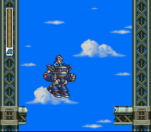
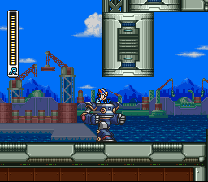
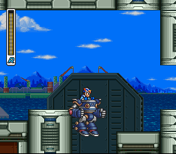
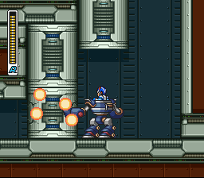
Crush Crawfish
logo no começo da fase, na parte de baixo, tem outra plataforma de robozões, use o robô H, vá andando até um ponte, ela vai ser quebrada por um penguim caindo do céu, caia também, vá avançando até achar mais um buraco e lá você vai encontrar uma parede destruível, quebre ela e você vai achar o chip.
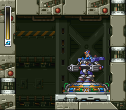
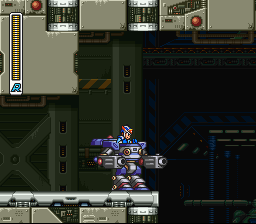
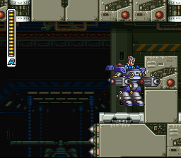
Blast Hornet
Perceba a abertura no teto presente nesta parte da fase. Utilize o dash vertical para alcançá-la e subir até o disponibilizador de robôs. Ao acessá-lo, selecione o Carrier H e prepare-se para avançar. De volta à parte inferior, siga até o final da plataforma. Em seguida, execute um dash e faça um pequeno voo para alcançar a plataforma mais distante à frente.
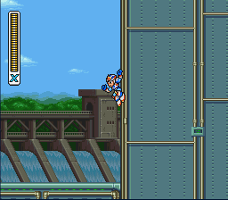
Toxic Seahorse
Encontre no meio da fase aquelas platafomas que permitem invocar os robozões, use o robô F para poder nadar melhor na aguá e para destruir aquela parede de ventiladores com os torpedos dele, depois disso suba na parede na direita e la vai estar a cápsula rosa.
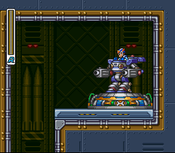
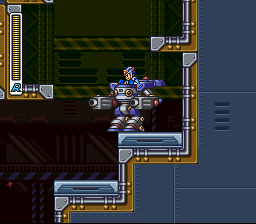
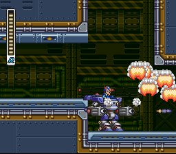
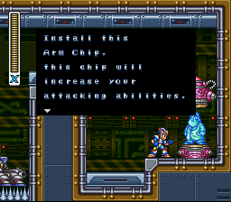
Gravity Beetle
Ao chegar nesta sala, comece subindo pela área à frente. Em seguida, utilize o robô Carrier H para prosseguir com mais segurança. Atravesse o próximo trecho usando o dash, aproveitando o impulso para evitar quedas. Continue avançando pelas plataformas acima, também utilizando o dash para facilitar a subida. No topo, destrua a parede para liberar o caminho. Depois disso, atravesse a área de espinhos com cuidado: saia do robô no momento certo, prenda-se à parede e use o salto para alcançar o outro lado com segurança.
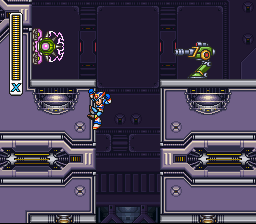
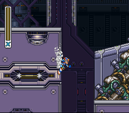
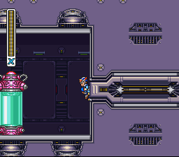
Golden Armor
Se você resistiu a tentação e não pegou nenhum chip antes, você sim é digno da golden armor. Na primeira das fases do Sigma, uma hora você terá que descer e lá naquelas rampas, na primeira vá escorregando pela parede na frente dela, algum momento você vai achar um passagem secreta, e lá vai estar uma cápsula rosa que te dará a golden armor(uma junção de todos os outros chips de uma vez)